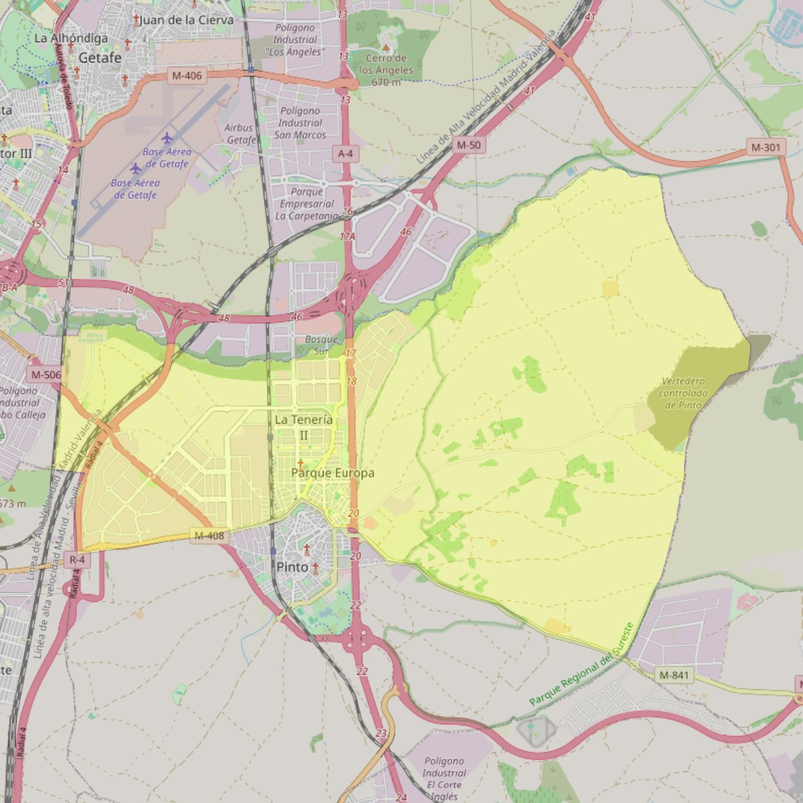

San Francisco Javier

- Arciprestazgo
- Valdemoro
- Población
- Pinto
- Dirección postal
- Avda. Antonio López, 20 (La Tenería)
- Código postal
- 28320
- Extensión
- 37,62 km² (3.762 ha)
- Teléfono
- 916 911 214
- Correo electrónico
- sanfranciscojavier-pinto@diocesisgetafe.es